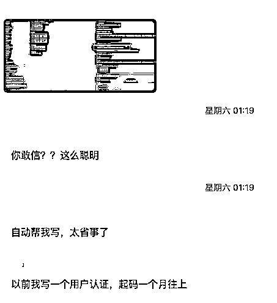

来源：https://rxas35pmvn.feishu.cn/docx/BfKjd0H8NoP5WRxa1VUcP267nig
之前的文章说如何使用 LocalIssues 可以进行项目开发，有一些朋友表示还没看明白，特此我做一个视频做一个说明
效果分享

对于不明白怎么使用的朋友，我把视频放上来，方便大家理解
LocalIssues 请访问 https://github.com/yinwm/LocalIssues